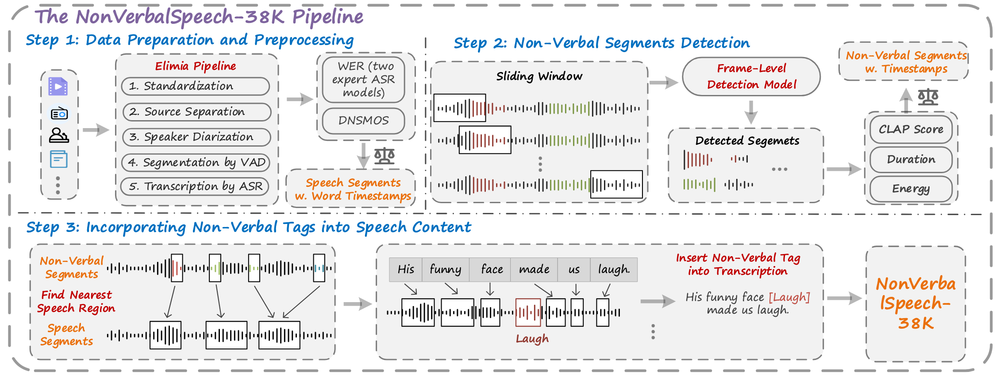
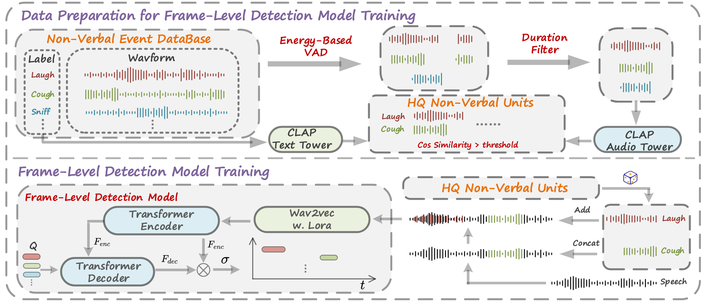

NonVerbalSpeech-38K:
A Scalable Pipeline for Enabling Non-Verbal Speech Generation and Understanding
Anonymous submission
Abstract Human spoken communication involves not only lexical content but also non-verbal vocalizations (NVs) such as laughter, sighs, and coughs, which convey emotions, intentions, and social signals. However, most existing speech systems focus solely on verbal content and lack the ability to understand and generate such non-verbal cues, reducing the emotional intelligence and communicative richness of spoken interfaces. In this work, we introduce NonVerbalSpeech-38K, a large and diverse dataset for non-verbal speech generation and understanding, collected from real-world media and annotated using an automatic pipeline. The dataset contains 38,718 samples (about 131 hours) with 10 categories of non-verbal cues, such as laughter, sniff, and throat clearing. We further validate the dataset by fine-tuning state-of-the-art models, including F5-TTS and Qwen2-Audio, demonstrating its effectiveness in non-verbal speech generation and understanding tasks. Our contributions are threefold: (1) We propose a practical pipeline for building natural and diverse non-verbal speech datasets; (2) We release a large-scale dataset to advance research on non-verbal speech generation and understanding; (3) We validate the dataset’s effectiveness by demonstrating improvements in both non-verbal speech synthesis and captioning, thereby facilitating richer human-computer interaction..
Contents
- Pipeline Overview
- Non-Verbal Speech Generation (ZH)
- Non-Verbal Speech Generation (EN)
- Non-Verbal Speech Understanding
- Dataset Samples
This page is for research demonstration purposes only.
Pipeline Overview

Figure 1. An overview of our NonVerbalSpeech-38K pipeline. It consists of three main stages: (1) Data Preparation and Preprocessing, (2) Non-Verbal Segment Detection, and (3) Integration of Non-Verbal Tags into Speech Content. Among these, NonVerbal Segment Detection serves as the core component of the pipeline.

Figure 2. Data preparation and frame-level detection model training.
Non-Verbal Speech Generation (ZH)
Note: Dia appears to lack support for Chinese (ZH), resulting in unintelligible audio. Furthermore, the pretrained F5-TTS model does not support non-verbal expression control.
| Text | Prompt | Dia | CosyVoice2 | F5-TTS | F5-TTS + Capspeech |
F5-TTS + NonVerbalTTS |
F5-TTS + NonVerbalSpeech-38K (Ours) |
|---|---|---|---|---|---|---|---|
| <laughing> 妈妈用防晒喷雾喷墙说除灰 | |||||||
| 这盆花养了半年，<sigh> 今天突然蔫了。 | |||||||
| 所有国际包裹都需要 <throatclearing> 填写海关申报单。 | |||||||
| <sniff> 那封泛黄的家书，读着读着眼泪就下来了。 | |||||||
| 看着地平线，<breath> 我觉得一切很美好。 | |||||||
| <throatclearing> 会议改到B会议室了。 | |||||||
| 看到孩子的奖状，<sniff> 我激动得有点鼻酸。 | |||||||
| <sigh> 面试表现很好，却被告知岗位临时取消 | |||||||
| 你把窗户关上吧，<coughing> 风太大嗓子受不了。 | |||||||
| 他递来伞时，<breath> 我轻声道谢。 | |||||||
| 您的订阅包含 <throatclearing> 三个月免费高级服务。 | |||||||
| 快喝点热水吧，<coughing>别硬撑着了。 | |||||||
| <laughing> 同桌把钢笔当成筷子用，墨水沾了满脸。 | |||||||
| 同事在群里发了表情包，<laughing> 太有梗了。 | |||||||
| 装修的灰尘太多了，<coughing> 我得戴个口罩。 |
Non-Verbal Speech Generation (EN)
| Text | Prompt | Dia | CosyVoice2 | F5-TTS | F5-TTS + Capspeech |
F5-TTS + NonVerbalTTS |
F5-TTS + NonVerbalSpeech-38K (Ours) |
|---|---|---|---|---|---|---|---|
| <laughing> The toddler 'read' the newspaper upside down with great seriousness. | |||||||
| Spent an hour cooking, <sigh> the dish is too salty. | |||||||
| <throatclearing> I think we can now move to the next speaker. | |||||||
| <breath> The meditation app guided my breathing rhythm. | |||||||
| Athletes joked about their silly warm-up moves, <laughing> before the game started. | |||||||
| I tried to dye Easter eggs <laughing> and ended up with blue fingers for a week. | |||||||
| The doctor will see you now <throatclearing> in examination room three. | |||||||
| <coughing> I think I need some warm tea to feel better. | |||||||
| I sat on the bench, <breath> watching people walk by. | |||||||
| <throatclearing> Fire exits are located at both ends of the hallway. | |||||||
| While playing with the kids at the park <coughing> I started coughing and had to sit down. | |||||||
| My internet dropped <sigh> during the video call. | |||||||
| <sniff> The subway platform carried ozone, pretzels, and the quiet determination of Monday. | |||||||
| While painting the high ceiling, <breath> she climbed down the ladder to breathe normally again. | |||||||
| <sniff> The scent of pine trees filled the mountain air. |
Non-Verbal Speech Understanding
| Model | Text |
|---|---|
| GT (NonVerbalTTS) | [laughing] Yeah, I feel comfortable around people. |
| Whisper-Large-V3 | Yeah, I feel comfortable around people. |
| Qwen2-Audio | yeah i feel comfortable around people. |
| Qwen2-Audio + CapSpeech |
[laughing] i feel comfortable around people |
| Qwen2-Audio + NonVerbalSpeech38K (Ours) |
[laughing] Yeah, I feel comfortable around people. |
| GT (NonVerbalTTS) | as much in more and other films, but she's very much [coughing] |
| Whisper-Large-V3 | as much in more and other films, but she's very much |
| Qwen2-Audio | as much and more in other films but she's very much. |
| Qwen2-Audio + CapSpeech |
not as much in and more in other films but she's very much [coughing] |
| Qwen2-Audio + NonVerbalSpeech38K (Ours) |
as much and more in other films but she's very much [coughing] |
| GT (NonVerbalTTS) | Yeah, I had bronchitis. It [laughing] wasn't much fun. |
| Whisper-Large-V3 | Yeah, I had bronchitis. It wasn't much fun. |
| Qwen2-Audio | yeah, had bronchitis. it wasn't much fun. |
| Qwen2-Audio + CapSpeech |
yeah i had bronchitis and [laughing] it wasn't much fun |
| Qwen2-Audio + NonVerbalSpeech38K (Ours) |
Yeah, I had bronchitis. [laughing] It wasn't much fun. |
| GT (NonVerbalTTS) | being told that I have a responsibility. [laughing] You know, I'm like, I want it to be my idea. And people are like, |
| Whisper-Large-V3 | being told that I have a responsibility. You know, I'm like, I want it to be my idea. And people are like, |
| Qwen2-Audio | told that I have a responsibility. You know, I'm like, I want it to be my ideal and people are like |
| Qwen2-Audio + CapSpeech |
being told that i have a responsibility [laughing] you know i'm like i want it to be my idea and people are like |
| Qwen2-Audio + NonVerbalSpeech38K (Ours) |
being told that I have a responsibility. [laughing] I'm like, I want it to be my idea and people are like... |
| GT (NonVerbalTTS) | Everton play well in the second half, but I think [breath] we we win. |
| Whisper-Large-V3 | Everton play well in the second half, but I think we we win. |
| Qwen2-Audio | Evertin play well in the second half, but I think we win. |
| Qwen2-Audio + CapSpeech |
so everton play well in the second half but i think ah we we win [coughing] |
| Qwen2-Audio + NonVerbalSpeech38K (Ours) |
Averton played well in the second half, but I think we [breath] win |
NonVerbalSpeech-38K dataset samples
More information about our NonVerbalSpeech-38K dataset is available on Hugging Face.
Note:- The <B>; and </B> tags indicate that non-verbal expressions overlap with spoken words.
- Due to limitations in ASR-based timestamps, slight misalignments may exist between the audio and captions. However, the detected non-verbal segments themselves are accurate. We plan to enhance alignment quality in future updates.
-
In the current version, we extend overlapping non-verbal expressions to the sub-sentence level to reduce misalignment issues. For example, we modify:
李渊看着秦琼心说，这是我的金殿哪，他在这儿就指着我两个儿子，让我两个儿子心服口服。哎呀。李渊心说，大唐<sniff><B>江山</B>要紧，我也不能再包庇我的两个儿子了。哎呀，是世民，你也给我跪下。
to:
李渊看着秦琼心说，这是我的金殿哪，他在这儿就指着我两个儿子，让我两个儿子心服口服。哎呀。李渊心说，<sniff><B>大唐江山要紧</B>，我也不能再包庇我的两个儿子了。哎呀，是世民，你也给我跪下。
This strategy aims to improve alignment between captions and audio. However, we observe that such modifications do not significantly enhance alignment quality.
To support further research, we also release the Non-Verbal Regions. detected by our model, which can be used to re-annotate the dataset with more accurate timestamps.
| Caption | Audio | Non-Verbal Segments Detected |
|---|---|---|
| <snore> 呃，乌托马乌托马他要跟我们去吗？你要跟我们去吗？ | ||
| 到门口，这蹲着摘耳朵，再次偷听，就听屋里的。 <snore> | ||
| don't thank me yet you must hurry saria sunrise will be here soon <throatclearing> | ||
| 我是不是随性过头了？ <throatclearing> 第一个环节是回忆过去。 | ||
| 他骗了我好几十万呢，我的棺材本全都搭进去了，然后然后他人就不见了，到警也找不到。 <crying> | ||
| <crying> 不要，王林说好的，我俩一块走的，我不要一个人走。 | ||
| 啊，这都画的啥呀， <breath> 不是你是小学生上语文课吗？又是卡通小人，又是图句号的。哎呀，行，男主名字，后面还写了个全剧最帅。 | ||
| <breath> 小孩子的把戏水做的枪也想杀人。 | ||
| 李渊看着秦琼心说，这是我的金殿哪，他在这儿就指着我两个儿子，让我两个儿子心服口服。哎呀。李渊心说， <sniff><B> 大唐江山要紧， </B> 我也不能再包庇我的两个儿子了。哎呀，是世民，你也给我跪下。 | ||
| <sniff> 说什么呢？我是说韩长老青通药理，韩家又一直盯着我不放，有没有可能是冲着我身上的某种东西来的。 | ||
| <laughing> 我们来助早齿大人一臂之力。 | ||
| 女娲说完一笑，便直接转身离开了后院。而蚩尤则是愣住了片刻， <laughing><B> 随即仰天大笑。 </B> 女娲，你果然厉害呀。 | ||
| 先生，您好歹吃点东西吧，再难受，也不能不吃东西。 <coughing> | ||
| 你去嗯嗯大人，我该注意些什么？ <coughing> | ||
| Heya, kids. The vet reported your dog is a biter, so I'm supposed to wait until animal control gets here to take him away. <gasp> | ||
| <gasp><B> 这是怎么回事？ </B> | ||
| <yawn> 好久没有熬夜了，好困啊。 | ||
| <yawn> 妖怪，你才是妖怪呢。 | ||
| 杨总，我知道数的都是雷政委的名字，没关系，以我的身份没有权利，拥有什么研究成果的，让你受委屈了。没事的， <sigh><B> 能在红暗基地做研究， </B> 能看到这么丰富的资料。 | ||
| <sigh><B> They say time flies when you're having fun, </B> so... |